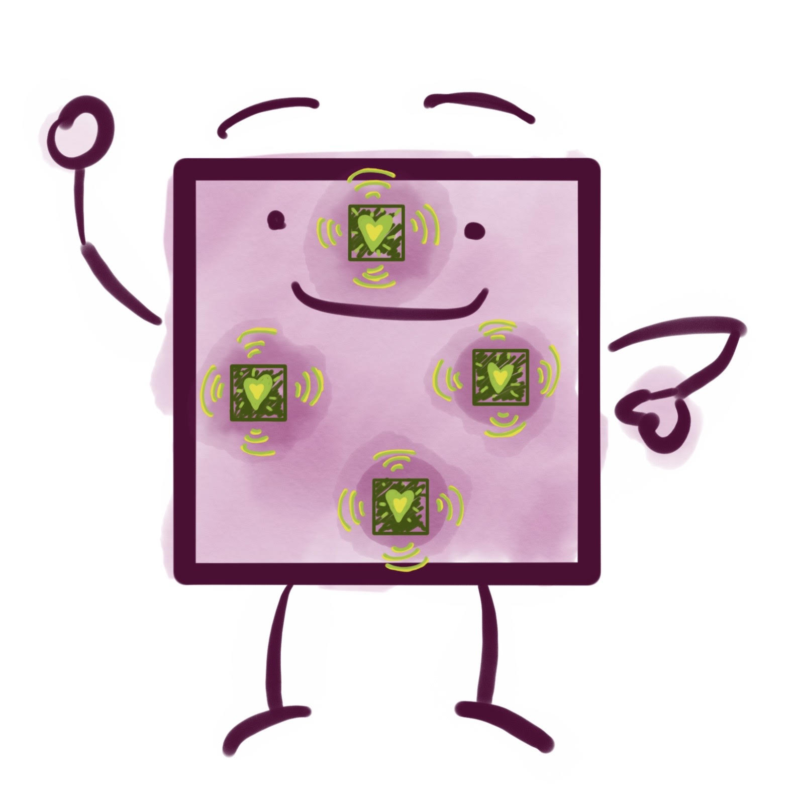
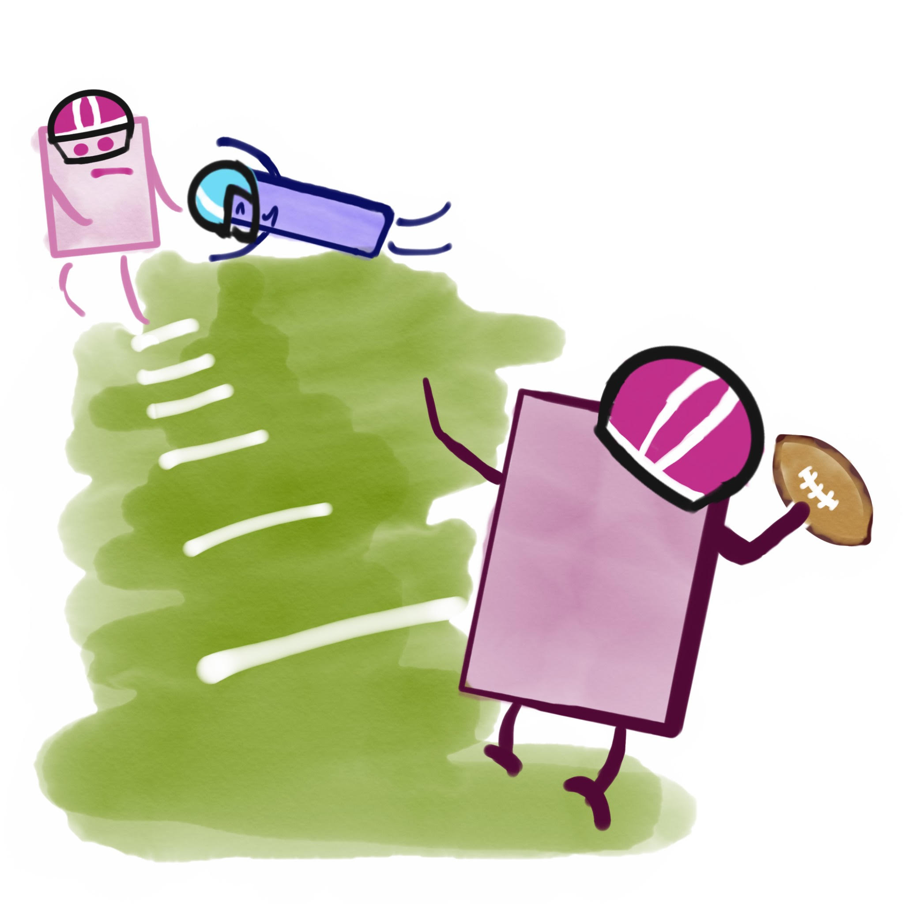
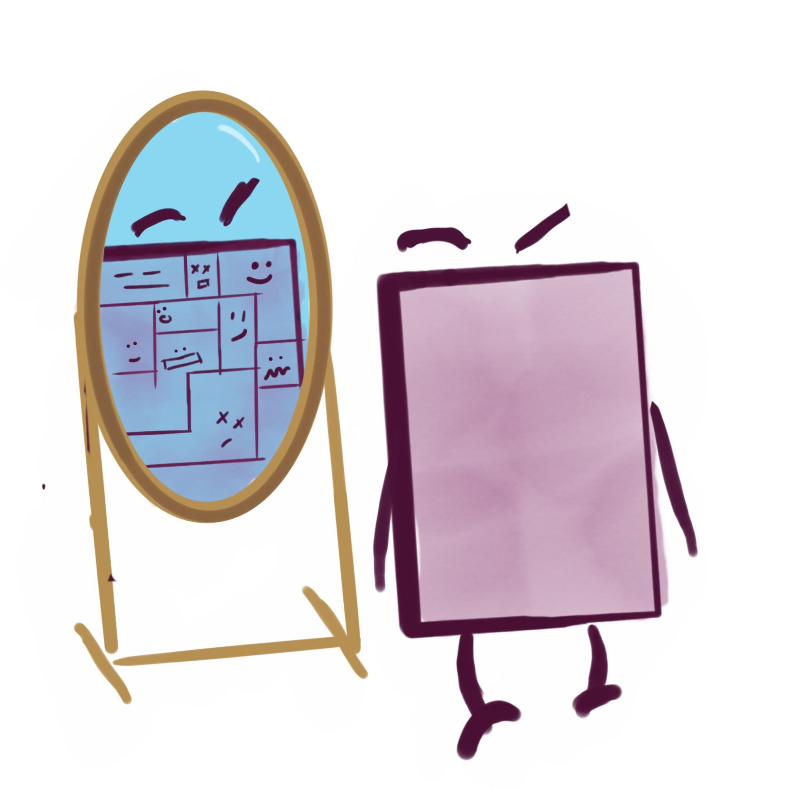
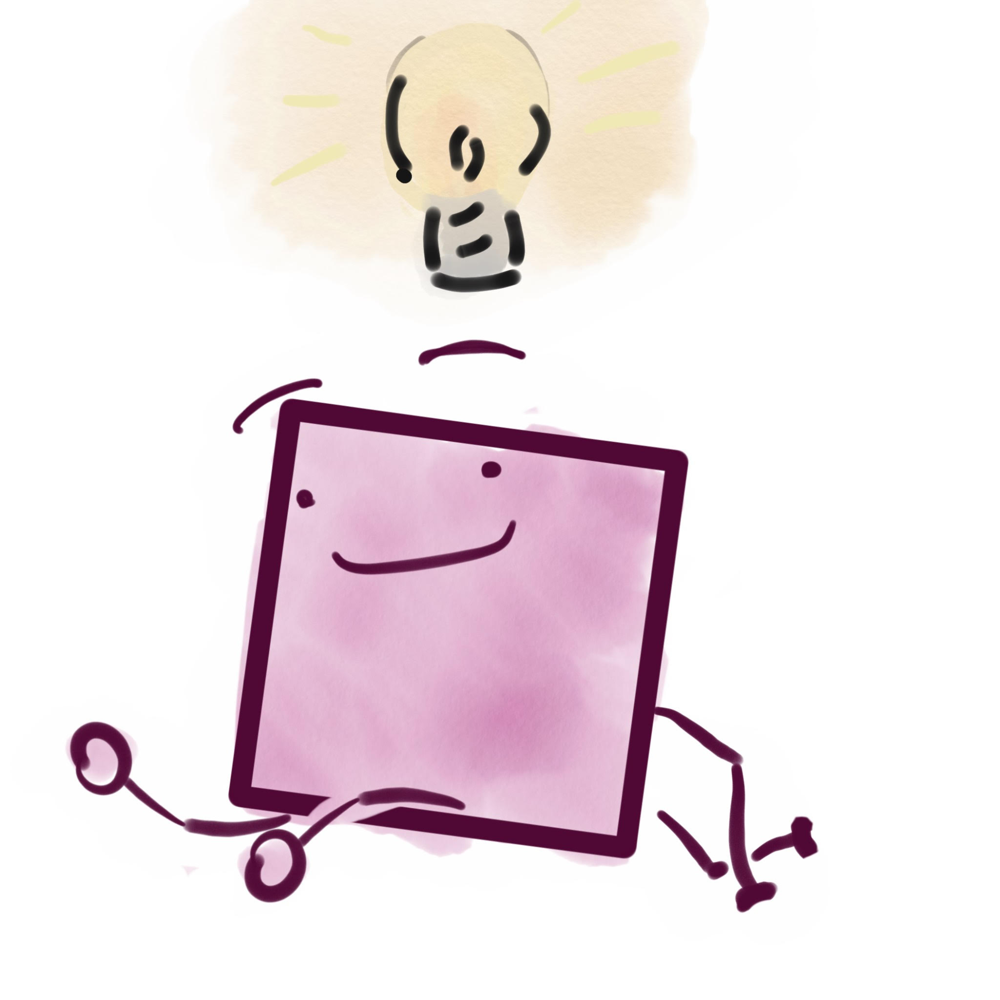

distributed
hierarchical
transitions
of
individuality

It's an evolution experiment where computer programs are evolving!
Each little grid title --- something like a biological cell --- is controlled by four virtual CPUs working in tandem (one for each side of the tile).
Depending on the program loaded into the cell, different decisions are made in response to environmental events and messages from neighboring cells.
For those in the know, virtual CPUs are being implemented using SignalGP [Lalejini and Ofria, 2018].

These cells are presented with a cooperative resource collection task.
In order to maximize their resource-collection rate, they need to organize into family resource-collecting groups (which we call "channels") that are just the right size... not too big and not too small!
Better-configured resource-collecting groups will tend to outcompete other groups for space on the grid.
Cells use resource they collect to reproduce.
When a cell has enough resource, it can copy its program into a neighboring cell.
The copy isn't perfect, though... usually, the program changes slightly (mutates) during this process.
My Darwin fanboys out there are probably onto it already, but
heritable variation + differential reproductive success (some programs are better at competing for space in the population) = ... evolution!

In previous work [Moreno and Ofria, 2019], we found that in response to this particular resource-collection task, strategies built on
reproductive division of labor,
resource sharing between cells, and
parental care for offspring
tend to evolve.
Such traits are suggestive of multicellularity... or, in fancy science-speak a fraternal transition in individuality [Smith and Szathmary, 1997].

So, why do this type of thing at all?
On one hand, we're using this model to ask and answer scientific questions about the evolution of multicellularity in order to better understand the processes at play behind life on Earth.
On the other, we hope that transitions in individuality --- which were key to the complexification and diversification of life on Earth --- can help us evolve sophisticated --- and perhaps useful --- computational systems, like reinforcement-learning agents.
But this web viewer is here so you can get a peek at evolution in action!
We reccomend loading pre-evolved strains using the Population Loader.
You can also just let the simulation run maybe 10,000 updates with rendering off (so it runs faster).
Then, render every update and look at
resource sharing in the Resource Sharing Viewer and
signs of reproductive cooperation in the Reproductive Pause Viewer and Resource Stockpile Viewer.
You might need to go get a cup of coffee before there's anything interesting to look at.
Pressed for time?
Watch a pre-rendered timelapse on YouTube here.
And, for extra credit be sure to
twiddle parameters in Configuration,
look at a program in the Dominant Genotype viewer (... can you figure out what it evolved to do?),
check out how the software is put together in Source & Ingredients,
give the neat-o papers and resources listed in References a peep,
toss us a star on GitHub using the button in the header, and
click over to Let's Chat and let us know what you think!
White borders divide low-level groups that are part of the same high-level group.
Black borders divide high-level groups.
The Received Resource Viewer depicts the amount of resource received from each neighbor during the previous update.
Black grid tiles are dead cells.
zerosmalllarge
White indicates zero resource was received.
Blue indicates a small amount of resource was received.
Green indicates an intermediate amount of resource was received.
Yellow indicates a large amount of resource was received.
White borders divide low-level groups that are part of the same high-level group.
Black borders divide high-level groups.
The Incoming Inter Message Counter Viewer depicts recent incoming message traffic from neighbors.
Black grid tiles are dead cells.
Color hue indicates the number of incoming messages.
zerolowhigh (mod 18)
White borders divide low-level groups that are part of the same high-level group.
Black borders divide high-level groups.
The Incoming Intra Message Counter Viewer depicts recent incoming message traffic within the cell.
Black grid tiles are dead cells.
Color hue indicates the number of incoming messages.
zerolowhigh (mod 18)
White borders divide low-level groups that are part of the same high-level group.
Black borders divide high-level groups.
The Quorum Bit Viewer shows whether a cell has detected a quorum bit at a single group level. Subview selectors show one group level.
Black grid tiles are dead cells.
Green indicates a set bit.
White indicates an unset bit.
White borders divide low-level groups that are part of the same high-level group.
Black borders divide high-level groups.
The Own Quorum Bit Viewer shows whether a cell has set its own quorum bit at a single group level. Subview selectors show one group level.
Black grid tiles are dead cells.
Green indicates a set bit.
White indicates an unset bit.
White borders divide low-level groups that are part of the same high-level group.
Black borders divide high-level groups.
The Quorum Bits Viewer shows the number of quorum bits known to each cell at a single group level. Subview selectors show one group level.
Black grid tiles are dead cells.
Red indicates one bit.
Green indicates two bits.
Blue indicates three bits.
Arbitrarily generated colors represent other counts.
White borders divide low-level groups that are part of the same high-level group.
Black borders divide high-level groups.
The Learned Quorum Bit Viewer shows whether a cardinal has learned a quorum bit at a single group level. Subview selectors show one group level.
Black grid tiles are dead cells.
Green indicates a learned bit.
White indicates no learned bit.
White borders divide low-level groups that are part of the same high-level group.
Black borders divide high-level groups.
The Learned Quorum Bits Viewer shows the number of quorum bits learned by each cardinal at a single group level. Subview selectors show one group level.
Black grid tiles are dead cells.
Red indicates one bit.
Green indicates two bits.
Blue indicates three bits.
Arbitrarily generated colors represent other counts.
White borders divide low-level groups that are part of the same high-level group.
Black borders divide high-level groups.
The Quorum Cap Viewer shows cells whose known quorum bits exceed the quorum cap at a single group level. Subview selectors show one group level.
Black grid tiles are dead cells.
Green cells are over the cap.
White cells are under the cap.
White borders divide low-level groups that are part of the same high-level group.
Black borders divide high-level groups.
The Num Busy Cores Viewer shows the number of virtual cores executing in each cell.
Black grid tiles are dead cells.
Color hue indicates the number of active virtual cores.
zerolowhigh (mod 18)
White borders divide low-level groups that are part of the same high-level group.
Black borders divide high-level groups.
The Expression by Module Viewer shows the number of virtual cores executing a SignalGP module. Subview selectors show one module.
Black grid tiles are dead cells.
Color hue indicates the number of active virtual cores executing the module.
zerolowhigh (mod 18)
White borders divide low-level groups that are part of the same high-level group.
Black borders divide high-level groups.
The Regulation by Module Viewer shows the protected regulation of a SignalGP module. Subview selectors show one module.
Black grid tiles are dead cells.
Red indicates down-regulation.
Green indicates up-regulation.
White indicates no regulation, or no such module.
Blue indicates invalid (NaN) regulation.
White borders divide low-level groups that are part of the same high-level group.
Black borders divide high-level groups.
The Regulation Exposed by Module Viewer shows the exposed regulation of a SignalGP module. Subview selectors show one module.
Black grid tiles are dead cells.
Red indicates down-regulation.
Green indicates up-regulation.
White indicates no regulation, or no such module.
Blue indicates invalid (NaN) regulation.
Gray indicates the module is not in the exposed jump table.
White borders divide low-level groups that are part of the same high-level group.
Black borders divide high-level groups.
The Module Expression Viewer depicts a dimension reduction (PCA) of each virtual core's module expression.
Black grid tiles are dead cells.
The first three principal components are shown in the Red, Green, and Blue color channels.
Similar colors indicate similar profiles of executing modules.
Black borders divide low-level groups that are part of the same high-level group.
Light gray borders divide high-level groups.
The Binary Module Expression Viewer depicts a dimension reduction (PCA) of whether each virtual core expresses each module.
Black grid tiles are dead cells.
The first three principal components are shown in the Red, Green, and Blue color channels.
Similar colors indicate similar profiles of executing modules.
Black borders divide low-level groups that are part of the same high-level group.
Light gray borders divide high-level groups.
The Module Regulation Viewer depicts a dimension reduction (PCA) of each virtual core's module regulation.
Black grid tiles are dead cells.
The first three principal components are shown in the Red, Green, and Blue color channels.
Similar colors indicate similar profiles of module regulation.
Light gray borders divide low-level groups that are part of the same high-level group.
Gray borders divide high-level groups.
The Trinary Module Regulation Viewer depicts a dimension reduction (PCA) of the sign of each virtual core's module regulation.
Black grid tiles are dead cells.
The first three principal components are shown in the Red, Green, and Blue color channels.
Similar colors indicate similar profiles of module regulation.
Black borders divide low-level groups that are part of the same high-level group.
Light gray borders divide high-level groups.
The Module Expression by Root Viewer depicts a dimension reduction (PCA) of each virtual core's module expression.
Black grid tiles are dead cells.
The first three principal components are shown in the Red, Green, and Blue color channels.
Similar colors indicate similar profiles of executing modules.
A separate PCA is performed for each phylogenetic root, so colors are not comparable between roots.
Black borders divide low-level groups that are part of the same high-level group.
Light gray borders divide high-level groups.
The Binary Module Expression by Root Viewer depicts a dimension reduction (PCA) of whether each virtual core expresses each module.
Black grid tiles are dead cells.
The first three principal components are shown in the Red, Green, and Blue color channels.
Similar colors indicate similar profiles of executing modules.
A separate PCA is performed for each phylogenetic root, so colors are not comparable between roots.
Black borders divide low-level groups that are part of the same high-level group.
Light gray borders divide high-level groups.
The Module Regulation by Root Viewer depicts a dimension reduction (PCA) of each virtual core's module regulation.
Black grid tiles are dead cells.
The first three principal components are shown in the Red, Green, and Blue color channels.
Similar colors indicate similar profiles of module regulation.
A separate PCA is performed for each phylogenetic root, so colors are not comparable between roots.
Light gray borders divide low-level groups that are part of the same high-level group.
Gray borders divide high-level groups.
The Trinary Module Regulation by Root Viewer depicts a dimension reduction (PCA) of the sign of each virtual core's module regulation.
Black grid tiles are dead cells.
The first three principal components are shown in the Red, Green, and Blue color channels.
Similar colors indicate similar profiles of module regulation.
A separate PCA is performed for each phylogenetic root, so colors are not comparable between roots.
Black borders divide low-level groups that are part of the same high-level group.
Light gray borders divide high-level groups.
The Module Expression by Kin Group Viewer depicts a dimension reduction (PCA) of each virtual core's module expression.
Black grid tiles are dead cells.
The first three principal components are shown in the Red, Green, and Blue color channels.
Similar colors indicate similar profiles of executing modules.
A separate PCA is performed for each kin group, so colors are not comparable between groups. Subview selectors show one group level.
Black borders divide low-level groups that are part of the same high-level group.
Light gray borders divide high-level groups.
The Binary Module Expression by Kin Group Viewer depicts a dimension reduction (PCA) of whether each virtual core expresses each module.
Black grid tiles are dead cells.
The first three principal components are shown in the Red, Green, and Blue color channels.
Similar colors indicate similar profiles of executing modules.
A separate PCA is performed for each kin group, so colors are not comparable between groups. Subview selectors show one group level.
Black borders divide low-level groups that are part of the same high-level group.
Light gray borders divide high-level groups.
The Module Regulation by Kin Group Viewer depicts a dimension reduction (PCA) of each virtual core's module regulation.
Black grid tiles are dead cells.
The first three principal components are shown in the Red, Green, and Blue color channels.
Similar colors indicate similar profiles of module regulation.
A separate PCA is performed for each kin group, so colors are not comparable between groups. Subview selectors show one group level.
Light gray borders divide low-level groups that are part of the same high-level group.
Gray borders divide high-level groups.
The Trinary Module Regulation by Kin Group Viewer depicts a dimension reduction (PCA) of the sign of each virtual core's module regulation.
Black grid tiles are dead cells.
The first three principal components are shown in the Red, Green, and Blue color channels.
Similar colors indicate similar profiles of module regulation.
A separate PCA is performed for each kin group, so colors are not comparable between groups. Subview selectors show one group level.
Black borders divide low-level groups that are part of the same high-level group.
Light gray borders divide high-level groups.
Group Structure
Demographics
Resource Collection
Cell Behavior
Resource Sharing
Messaging
Reproduction and Apoptosis
Cell Control
Expression
Regulation
Click a link to restart the viewer and seed the population with pre-evolved strains.
Hey!
You can adjust any of these parameters right in your web browser using URL query parameters.
For example, appending
?RNG_PRESEED=2&MUTATION_RATE=0.1
in your web browser's URL bar and refreshing will change the random number generator seed and mutation rate.
Parameters below are locked in at compile time, so you can't adjust them here...
:(
When this panel is open, you'll have to click the step button to advance the simulation.
If the simulation isn't running, you'll need to click the "Update" or "Start" button then come back here.
Click the 🤔 for details on any log entry!
⬇️ Stack Log --- tells you the nested set of tasks that the computer is working on right now.
⬇️ Events Log --- gives you a play-by-play of what the computer has done.
Comments, questions, concerns?
I started a twitter thread so we can chat!
Find the C++ and HTML source on GitHub.
MIT licensed, contributions welcome!
Data from and tutorials for the native version of the software is hosted on the
Open Science Framework.
The
Empirical C++ Library
for efficient, reliable, and accessible scientific software is the secret sauce behind the web visualization and digital evolution framework.
Emscripten
compiled it to javascript so it can run in your web browser.
Bootstrap
makes it look pretty and play nice with mobile devices.
Vostinar, Anya, Alexander Lalejini, Charles Ofria, Emily Dolson, and Matthew Andres Moreno. "Empirical: A scientific software library for research, education, and public engagement." Journal of Open Source Software 9.98 (2024): 6617. https://doi.org/10.21105/joss.06617
Smith, John Maynard, and Eors Szathmary. The major transitions in evolution. Oxford University Press, 1997.
Lalejini, Alexander, and Charles Ofria. "Evolving event-driven programs with SignalGP." Proceedings of the Genetic and Evolutionary Computation Conference. ACM, 2018. https://doi.org/10.1145/3205455.3205523
Moreno, Matthew Andres, and Charles Ofria. "Toward open-ended fraternal transitions in individuality." Artificial life 25.2 (2019): 117-133. https://doi.org/10.1162/artl_a_00284
Moreno, Matthew Andres, Santiago Rodriguez Papa, Alexander Lalejini, and Charles Ofria. "SignalGP-Lite: Event driven genetic programming library for large-scale artificial life applications." arXiv preprint arXiv:2108.00382 (2021). https://doi.org/10.48550/arXiv.2108.00382
Moreno, Matthew Andres, Santiago Rodriguez Papa, and Charles Ofria. "Conduit: A C++ library for best-effort high performance computing." Proceedings of the Genetic and Evolutionary Computation Conference Companion. ACM, 2021. https://doi.org/10.1145/3449726.3463205
Moreno, Matthew Andres, Santiago Rodriguez Papa, and Charles Ofria. "Case study of novelty, complexity, and adaptation in a multicellular system." OEE4: The Fourth Workshop on Open-Ended Evolution, 2021. http://workshops.alife.org/oee4/papers/moreno-oee4-camera-ready.pdf
Moreno, Matthew Andres, and Charles Ofria. "Exploring evolved multicellular life histories in a open-ended digital evolution system." Frontiers in Ecology and Evolution 10 (2022): 750837. https://doi.org/10.3389/fevo.2022.750837
This research was supported in part by NSF grants DEB-1655715 and DBI-0939454.
This material is based upon work supported by the National Science Foundation Graduate Research Fellowship under Grant No. DGE-1424871.